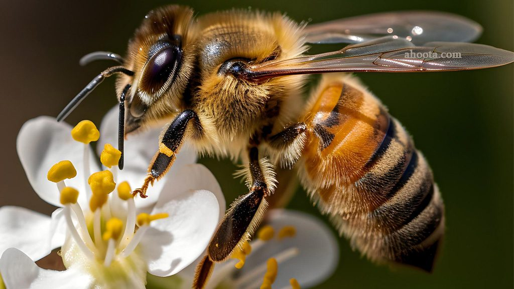

با ما در سفر به دنیای زنبوران و عسلهای طبیعی همراه شوید.
ما یک گروه از زنبورداران با تجربه هستیم که به تولید عسل طبیعی و محصولات زنبورعسل میپردازیم. هدف ما ترویج زنبورداری پایدار و حمایت از محیط زیست است.
بیشتر بدانیدعسل طبیعی یکی از شیرینترین و مغذیترین خوراکیهاست که بهطور مستقیم از شهد گلها توسط زنبورهای عسل تولید میشود. این ماده غذایی نهتنها طعم لذیذی دارد، بلکه دارای خواص درمانی فراوانی نیز هست. عسل طبیعی سرشار از ویتامینها، مواد معدنی و آنتیاکسیدانهاست و میتواند به تقویت سیستم ایمنی بدن، بهبود عملکرد گوارش و تسکین سرفه کمک کند. همچنین، استفاده از عسل بهعنوان یک شیرینکننده طبیعی میتواند گزینهای سالمتر نسبت به شکر باشد. با این حال، برای بهرهمندی از خواص آن، باید از عسلهای خالص و بدون افزودنی استفاده کرد.
موم زنبور، یک ماده طبیعی و ارزشمند است که توسط زنبورهای عسل تولید میشود. این ماده نرم و قابل انعطاف از ترشح غدد مخصوص زنبورها به دست میآید و در ساخت کندو و سلولهای عسل استفاده میشود. موم زنبور دارای خواص ضدباکتریایی و ضدالتهابی است و به همین دلیل در صنایع آرایشی و بهداشتی، داروسازی و حتی در تولید شمعها کاربرد دارد. همچنین، به دلیل ویژگیهای حفاظتی آن، در صنایع غذایی نیز برای بستهبندی و حفظ تازگی محصولات استفاده میشود. موم زنبور نه تنها یک محصول مفید و کاربردی است، بلکه نشاندهنده تلاش و همکاری زنبورها در طبیعت نیز میباشد.
ژل رویال، مادهای مغذی و شیری رنگ است که توسط زنبورهای کارگر تولید میشود و به عنوان تغذیه اولیه ملکه زنبورهای عسل استفاده میشود. این ماده حاوی ویتامینها، مواد معدنی، آنتیاکسیدانها و پروتئینهاست و به همین دلیل خواص درمانی و بهداشتی زیادی دارد. ژل رویال به عنوان یک مکمل غذایی در طب سنتی و مدرن مورد توجه قرار گرفته و اعتقاد بر این است که میتواند به تقویت سیستم ایمنی، افزایش انرژی و بهبود سلامت پوست کمک کند. همچنین، برخی تحقیقات نشان دادهاند که این ماده ممکن است در کاهش التهاب و بهبود وضعیت روحی مؤثر باشد. با این حال، مصرف آن باید با احتیاط صورت گیرد و افرادی که به زنبورعسل حساسیت دارند، باید از آن پرهیز کنند.